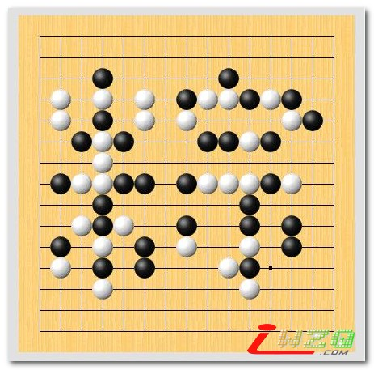

VCF 之 粽子（白先胜）
#1 VCF 之 粽子（白先胜） 作者：屏蔽 发表时间：2007-6-18 13:57:09

第一次认真做一个VCF习题，效果很不理想，有形象化的VCF习题当然是比随便摆出来的更加生硬吧！摆好之后，首先是照顾形象，然后要考虑棋子数量是否合适，自己设计的VCF步骤是否成立，最后要进行特别麻烦的一项工程——通过交换棋子把所有的简单胜都给消除掉，确保取胜线路唯一。按照这个原则，我改了一遍又一遍，最终只能做一个步数超少的VCF，太郁闷啦……真不知道那些又复杂又漂亮的VCF习题是怎么搞出来的呢？哈哈～ 总之，还是献给大家吧！愿大家端午节快乐！ 
#2 Re:VCF 之 粽子（白先胜） 作者：黄药师 发表时间：2007-7-2 9:44:11
强～～～～
原来是“棕”字～～！
#3 Re:VCF 之 粽子（白先胜） 作者：yuelee 发表时间：2007-7-7 10:17:59
 自己设计的VCF题，好厉害啊~~~~~~~~~
自己设计的VCF题，好厉害啊~~~~~~~~~
#4 Re:VCF 之 粽子（白先胜） 作者：自来自去 发表时间：2008-8-27 18:02:58
呵呵，还是靠打谱软件才看到那个禁手的，长记忆了！#5 Re:VCF 之 粽子（白先胜） 作者：牧羊犬 发表时间：2009-1-11 21:44:33
太强了！逼禁手兜了一圈！
真不敢想象能做出这么漂亮的VCF题！
顶！
顶！
顶！
顶！